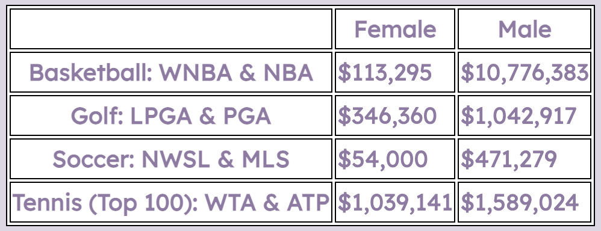
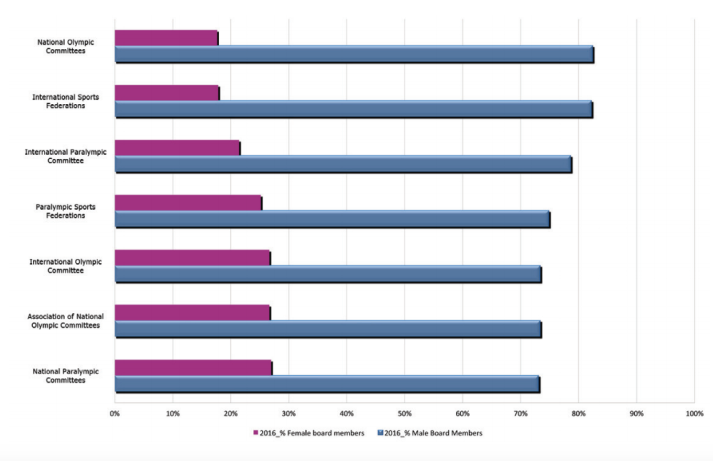

The table above shows the difference in salary between professional male and female athletes. It displays a visualization that depicts how drastic of a difference there is before how much men and women earn for the same effort. Despite both male and female athletes putting in the same amount of rigour, men get much more recognition and pay than women. Low media representation and a lack of recognition of female athletes leads to lower salaries. This is why it is important to support and advocate for women's sports. However, discrimination does not exist solely between athletes, but also the Olympics & Paralympic federation. The histogram below illustrates the difference in the number of women and men judging, scoring, and managing the Olympics & Paralympics. It shows the percentage of female board members, which is shown by the pink bars. Meanwhile, the percentage of male board members is demonstrated by the blue bars. The difference in length between the blue and pink bars is drastic, showing how more women need to be involved and supported in sports. Equal pay, equal play.
